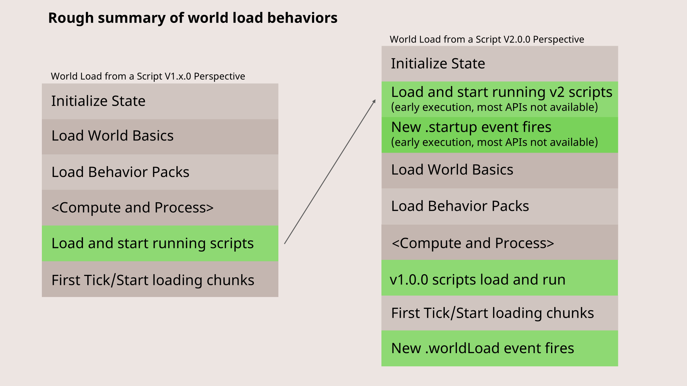

PrivateconstructorReadonlyblockThis event fires for each BlockLocation destroyed by an explosion. It is fired after the blocks have already been destroyed.
This property can be read in early-execution mode.
import { world, BlockExplodeAfterEvent } from "@minecraft/server";
world.afterEvents.blockExplode.subscribe((event: BlockExplodeAfterEvent) => {
console.log("Block:", event.block);
console.log("Dimension:", event.dimension);
console.log("Exploded Block Permutation:", event.explodedBlockPermutation);
console.log("Source:", event.source);
// set block back
event.block.setPermutation(event.explodedBlockPermutation);
});
ReadonlybuttonReadonly BetachatThis event is triggered after a chat message has been broadcast or sent to players.
This property can be read in early-execution mode.
import { WeatherType, system, world } from "@minecraft/server";
const chatObjective =
world.scoreboard.getObjective("chat") ??
world.scoreboard.addObjective("chat", "chat");
world.afterEvents.chatSend.subscribe((event) => {
const { sender } = event;
const score = chatObjective.hasParticipant(sender)
? chatObjective.getScore(sender.scoreboardIdentity)
: 0;
chatObjective.setScore(sender, score + 1);
});
ReadonlydataThis event is fired when an entity event has been triggered that will update the component definition state of an entity.
This property can be read in early-execution mode.
import { world, system, Entity } from "@minecraft/server";
// Event id to trigger to sheeps
const eventId = "minecraft:entity_spawned";
system.runInterval(() => {
for (let player of world.getAllPlayers()) {
let [entityRaycaseHit] = player.getEntitiesFromViewDirection({
maxDistance: 150,
});
if (!entityRaycaseHit) continue;
let entity = entityRaycaseHit.entity;
if (entity?.typeId === "minecraft:sheep") {
listenTo(entity);
entity.triggerEvent(eventId);
}
}
});
// Detect component groups that are added and removed, and other
// entity definition events fired when this event fires.
function listenTo(entity: Entity) {
const callback = world.afterEvents.dataDrivenEntityTrigger.subscribe(
(data) => {
world.afterEvents.dataDrivenEntityTrigger.unsubscribe(callback);
data.getModifiers().forEach((modifier) => {
console.log(
"ComponentGroupsToAdd:",
modifier.addedComponentGroups,
);
console.log(
"ComponentGroupsToRemove:",
modifier.removedComponentGroups,
);
console.log("Triggers:", modifier.triggers);
});
},
{ entities: [entity], eventTypes: [eventId] },
);
}
ReadonlyeffectThis event fires when an effect, like poisoning, is added to an entity.
This property can be read in early-execution mode.
import { world } from "@minecraft/server";
const effectAddSubscription = world.afterEvents.effectAdd.subscribe(
(event) => {
console.log("Effect:", event.effect);
console.log("Entity:", event.entity);
// Your custom handling for the effect added event
// Example: Notify players, update UI, etc.
},
{
// Optionally provide EntityEventOptions to filter entities or entity types
entities: [
/* Array of specific Entity instances */
],
entityTypes: ["minecraft:creeper", "minecraft:player"], // Array of entity type IDs
},
);
// Later, you can unsubscribe when needed
world.afterEvents.effectAdd.unsubscribe(effectAddSubscription);
ReadonlyentityReadonlyentityThis event fires when entity health changes in any degree.
This property can be read in early-execution mode.
import { world } from "@minecraft/server";
const healthChangedSubscription =
world.afterEvents.entityHealthChanged.subscribe(
(event) => {
console.log("Entity:", event.entity);
console.log("Old Health:", event.oldValue);
console.log("New Health:", event.newValue);
// Your custom handling for entity health change event
// Example: Display a message, update UI, etc.
},
{
// Optionally provide EntityEventOptions to filter entities or entity types
entities: [
/* Array of specific Entity instances */
],
entityTypes: ["minecraft:player", "minecraft:zombie"], // Array of entity type IDs
},
);
// Later, you can unsubscribe when needed
world.afterEvents.entityHealthChanged.unsubscribe(healthChangedSubscription);
ReadonlyentityThis event fires when an entity hits (that is, melee attacks) a block.
This property can be read in early-execution mode.
import { world } from "@minecraft/server";
// Subscribes to the entityHitBlock event, triggering when an entity collides with a block.
world.afterEvents.entityHitBlock.subscribe((event) => {
const {
damagingEntity, // The entity that hit the block.
hitBlock, // The block that was hit.
hitBlockPermutation,
} = event;
world.sendMessage(
`${damagingEntity.typeId} hit a ${hitBlockPermutation.type.id} at ${hitBlock.location.x}, ${hitBlock.location.y}, ${hitBlock.location.z}`,
);
});
ReadonlyentityThis event fires when an entity hits (that is, melee attacks) another entity.
This property can be read in early-execution mode.
import { world } from "@minecraft/server";
world.afterEvents.entityHitBlock.subscribe((event) => {
const location1 = event.damagingEntity.location;
const location2 = event.hitBlock.location;
const distance = Math.pow(
Math.pow(location2.x - location1.x, 2) +
Math.pow(location2.y - location1.y, 2) +
Math.pow(location2.z - location1.z, 2),
0.5,
);
console.log("Distance: " + distance + " blocks");
});
ReadonlyentityReadonlyentityimport { world } from "@minecraft/server";
// Subscribe to the EntityLoadAfterEvent
const entityLoadSubscription = world.afterEvents.entityLoad.subscribe(
(event) => {
// Handle the entity load event
world.sendMessage(`Entity loaded: ${event.entity.typeId}`);
// Unsubscribe so the message doesn't appear after fired
world.afterEvents.entityLoad.unsubscribe(entityLoadSubscription);
},
);
ReadonlyentityFires when an entity is removed (for example, potentially unloaded, or removed after being killed).
This property can be read in early-execution mode.
// Script by WavePlayz
import { system, world } from "@minecraft/server";
// Subscribe to the entityRemove event, which is triggered when an entity is removed from the world
world.afterEvents.entityRemove.subscribe((eventData) => {
// Extract the type ID of the removed entity from the event data
const { typeId } = eventData;
// Send a message to all players in the world indicating that an entity of the given type has been removed
world.sendMessage(`Entity ${typeId} got removed`);
});
/*
Explanation:
This script listens for the `entityRemove` event, which occurs when an entity is removed from the Minecraft world.
- **Event Subscription**:
The `world.afterEvents.entityRemove.subscribe` method registers a callback function to handle the event whenever an entity is removed.
- **Extracting Entity Type**:
The `typeId` property from the `eventData` object contains the identifier of the removed entity's type.
- **Sending a Message**:
The script constructs a message indicating which type of entity was removed and sends this message to all players in the world using `world.sendMessage`.
Usage:
When an entity is removed (e.g., due to despawning, being killed, or otherwise removed), this script will automatically notify all players in the game with a message stating the type of the removed entity.
*/
ReadonlyentityThis event fires when an entity is spawned.
This property can be read in early-execution mode.
import { world } from "@minecraft/server";
// Subscribe to entitySpawn event, so it sends a message when an entity is spawn into a world.
world.afterEvents.entitySpawn.subscribe((event) => {
const { entity } = event;
// Sends a message to world.
world.sendMessage(`${entity.typeId} is spawned`);
});
ReadonlyexplosionThis event is fired after an explosion occurs.
This property can be read in early-execution mode.
import { world } from "@minecraft/server";
// Subscribe to the ExplosionAfterEvent
const explosionSubscription = world.afterEvents.explosion.subscribe((event) => {
console.log(`Explosion occurred in dimension ${event.dimension.id}`);
if (event.source) {
console.log(`Explosion source: ${event.source.typeId}`);
} else {
console.log(`Explosion source: None`);
}
const impactedBlocks = event.getImpactedBlocks();
console.log(`Impacted blocks: ${JSON.stringify(impactedBlocks)}`);
});
// ... Later in your code, when you want to unsubscribe
world.afterEvents.explosion.unsubscribe(explosionSubscription);
ReadonlygameThis event fires when a world.gameRules property has changed.
This property can be read in early-execution mode.
// Script by WavePlayz
import { world } from "@minecraft/server";
// Subscribe to the gameRuleChange event, which is triggered when a game rule is updated
world.afterEvents.gameRuleChange.subscribe((eventData) => {
// Extract the game rule name and its new value from the event data
const { rule, value } = eventData;
// Send a message to all players in the world indicating that a game rule has been updated
world.sendMessage(`Gamerule ${rule} updated to ${value}`);
});
/*
Explanation:
This script listens for the `gameRuleChange` event, which occurs when a game rule is modified in Minecraft.
- **Event Subscription**:
The `world.afterEvents.gameRuleChange.subscribe` method registers a callback function to handle the event whenever a game rule changes.
- **Extracting Information**:
- `rule` provides the name of the game rule that was changed.
- `value` indicates the new value of the game rule.
- **Sending Notification**:
- The script constructs a message that includes the name of the updated game rule and its new value, then sends this message to all players in the world using `world.sendMessage`.
Usage:
When a game rule is changed, this script automatically notifies all players with a message that includes the name of the updated game rule and its new value. This is useful for tracking changes to game rules and keeping players informed about the current game settings.
*/
ReadonlyitemThis event fires when a chargeable item completes charging.
This property can be read in early-execution mode.
// Script by WavePlayz
import { world } from "@minecraft/server";
// Subscribe to the itemCompleteUse event, which is triggered when a player completes using an item
world.afterEvents.itemCompleteUse.subscribe((eventData) => {
// Extract the player who used the item and the item stack from the event data
const { source, itemStack } = eventData;
// Construct a message indicating the player's name and the type of item they used
world.sendMessage(
`Player ${source.name} completed use of item (${itemStack.typeId})`,
);
});
/*
Explanation:
This script listens for the `itemCompleteUse` event, which occurs when a player finishes using an item in Minecraft.
- **Event Subscription**:
The `world.afterEvents.itemCompleteUse.subscribe` method registers a callback function to handle the event whenever an item use is completed.
- **Extracting Information**:
- `source` represents the player who used the item.
- `itemStack` provides details about the item stack, including its type ID.
- **Sending Notification**:
- The script constructs a message that includes the player's name and the type ID of the item they used. This message is then sent to all players in the world using `world.sendMessage`.
Usage:
When a player completes using an item (such as consuming a potion or using a tool), this script sends a notification to all players in the game, indicating which player used which item. This can be useful for tracking item usage or for general game management.
*/
ReadonlyitemThis event fires when a chargeable item is released from charging.
This property can be read in early-execution mode.
// Script by WavePlayz
import { world } from "@minecraft/server";
// Subscribe to the `itemReleaseUse` event, which is triggered when a player releases the use of an item
world.afterEvents.itemReleaseUse.subscribe((eventData) => {
const { source, itemStack } = eventData;
world.sendMessage(
`${source.name} released the use of item ${itemStack.typeId}`,
);
});
ReadonlyitemThis event fires when a chargeable item starts charging.
This property can be read in early-execution mode.
// Script by WavePlayz
import { world } from "@minecraft/server";
// Subscribe to the `itemStartUse` event, which is triggered when a player starts using an item
world.afterEvents.itemStartUse.subscribe((eventData) => {
const { source, itemStack } = eventData;
world.sendMessage(`${source.name} started using item ${itemStack.typeId}`);
});
ReadonlyitemThis event fires when a player successfully uses an item or places a block by pressing the Use Item / Place Block button. If multiple blocks are placed, this event will only occur once at the beginning of the block placement. Note: This event cannot be used with Hoe or Axe items.
This property can be read in early-execution mode.
// Script by WavePlayz
import { world } from "@minecraft/server";
// Subscribe to the `itemStartUseOn` event, which is triggered when a player starts using an item on a block
world.afterEvents.itemStartUseOn.subscribe((eventData) => {
const { source, block, itemStack } = eventData;
const { x, y, z } = block.location;
world.sendMessage(
`${source.name} started using item ${itemStack.typeId} on block at ${x}, ${y}, ${z}`,
);
});
ReadonlyitemThis event fires when a chargeable item stops charging.
This property can be read in early-execution mode.
// Script by WavePlayz
import { world } from "@minecraft/server";
// Subscribe to the `itemStopUse` event, which is triggered when a player stops using an item
world.afterEvents.itemStopUse.subscribe((eventData) => {
const { source, itemStack } = eventData;
world.sendMessage(`${source.name} stopped using item ${itemStack.typeId}`);
});
ReadonlyitemThis event fires when a player releases the Use Item / Place Block button after successfully using an item. Note: This event cannot be used with Hoe or Axe items.
This property can be read in early-execution mode.
// Script by WavePlayz
import { world } from "@minecraft/server";
// Subscribe to the `itemStopUseOn` event, which is triggered when a player stops using an item on a block
world.afterEvents.itemStopUseOn.subscribe((eventData) => {
const { source, block, itemStack } = eventData;
const { x, y, z } = block.location;
world.sendMessage(
`${source.name} stopped using item ${itemStack.typeId} on block at ${x}, ${y}, ${z}`,
);
});
ReadonlyitemThis event fires when an item is successfully used by a player.
This property can be read in early-execution mode.
// Script by WavePlayz
import { world } from "@minecraft/server";
// Subscribe to the `itemUse` event, which is triggered when a player uses an item
world.afterEvents.itemUse.subscribe((eventData) => {
const { source, itemStack } = eventData;
world.sendMessage(`${source.name} used item ${itemStack.typeId}`);
});
Readonlylever// Script by WavePlayz
import { world } from "@minecraft/server";
// Subscribe to the `leverAction` event, which is triggered when a player interacts with a lever
world.afterEvents.leverAction.subscribe((eventData) => {
const { source, block, powered } = eventData;
const { x, y, z } = block.location;
world.sendMessage(
`${source.name} toggled a lever at ${x}, ${y}, ${z}. Lever is now ${powered ? "ON" : "OFF"}`,
);
});
Readonly BetamessageReadonlypistonThis event fires when a piston expands or retracts.
This property can be read in early-execution mode.
// Script by WavePlayz
import { world } from "@minecraft/server";
// Subscribe to the `pistonActivate` event, which is triggered when a piston extends or retracts
world.afterEvents.pistonActivate.subscribe((eventData) => {
const { block, isExpanding } = eventData;
const { x, y, z } = block.location;
world.sendMessage(
`Piston at ${x}, ${y}, ${z} is ${isExpanding ? "extending" : "retracting"}`,
);
});
ReadonlyplayerThis event fires for a block that is broken by a player.
This property can be read in early-execution mode.
import { world } from "@minecraft/server";
world.afterEvents.playerBreakBlock.subscribe((event) => {
const { brokenBlockPermutation, player } = event;
if (brokenBlockPermutation.type.id === "minecraft:grass") {
player.sendMessage("You broke a grass block!");
}
if (brokenBlockPermutation.type.id === "minecraft:stone") {
player.sendMessage("You broke a stone block!");
}
});
ReadonlyplayerThis event fires when an InputButton state is changed.
This property can be read in early-execution mode.
ReadonlyplayerFires when a player moved to a different dimension.
This property can be read in early-execution mode.
// Script by WavePlayz
import { world } from "@minecraft/server";
// Subscribe to the `playerDimensionChange` event, which is triggered when a player changes dimensions
world.afterEvents.playerDimensionChange.subscribe((eventData) => {
const { player, fromDimension, toDimension } = eventData;
world.sendMessage(
`${player.name} moved from ${fromDimension.id} to ${toDimension.id}`,
);
});
Readonlyplayer// Script by WavePlayz
import { world } from "@minecraft/server";
// Subscribe to the `playerEmote` event, which is triggered when a player performs an emote
world.afterEvents.playerEmote.subscribe((eventData) => {
const { player, personaPieceId } = eventData;
world.sendMessage(`${player.name} performed emote ${personaPieceId}`);
});
Readonlyplayer// Script by WavePlayz
import { world } from "@minecraft/server";
// Subscribe to the `playerGameModeChange` event, which is triggered when a player changes their game mode
world.afterEvents.playerGameModeChange.subscribe((eventData) => {
const { player, toGameMode } = eventData;
world.sendMessage(`${player.name} changed game mode to ${toGameMode}`);
});
Readonly RcplayerReadonlyplayerThis event fires when a player's InputMode changes.
This property can be read in early-execution mode.
ReadonlyplayerThis event fires when a players input permissions change.
This property can be read in early-execution mode.
// Script by WavePlayz
import { world } from "@minecraft/server";
// Subscribe to the `playerInputPermissionCategoryChange` event, which is triggered when a player's input permissions change
world.afterEvents.playerInputPermissionCategoryChange.subscribe((eventData) => {
const { player, category, enabled } = eventData;
world.sendMessage(
`${player.name} ${enabled ? "enabled" : "disabled"} input permission category ${category}`,
);
});
ReadonlyplayerAn event for when a player interacts with a block.
This property can be read in early-execution mode.
// Script by WavePlayz
import { world } from "@minecraft/server";
// Subscribe to the `playerInteractWithBlock` event, which is triggered when a player interacts with a block
world.afterEvents.playerInteractWithBlock.subscribe((eventData) => {
const { player, block } = eventData;
const { x, y, z } = block.location;
world.sendMessage(
`${player.name} interacted with block at ${x}, ${y}, ${z}`,
);
});
ReadonlyplayerThis event fires when a player interacts with an entity.
This property can be read in early-execution mode.
// Script by WavePlayz
import { world } from "@minecraft/server";
// Subscribe to the `playerInteractWithEntity` event, which is triggered when a player interacts with an entity
world.afterEvents.playerInteractWithEntity.subscribe((eventData) => {
const { player, target, beforeItemStack, itemStack } = eventData;
const { x, y, z } = target.location;
if (!itemStack && !beforeItemStack) {
world.sendMessage(
`${player.name} interacted with entity at ${x}, ${y}, ${z}`,
);
} else {
world.sendMessage(
`${player.name} interacted with entity at ${x}, ${y}, ${z} with ${beforeItemStack.typeId} (now ${itemStack.typeId})`,
);
}
});
Readonly RcplayerReadonlyplayerReadonlyplayerReadonlyplayerThis event fires for a block that is placed by a player.
This property can be read in early-execution mode.
// Script by WavePlayz
import { world } from "@minecraft/server";
// Subscribe to the `playerPlaceBlock` event, which is triggered when a player places a block
world.afterEvents.playerPlaceBlock.subscribe((eventData) => {
// Destructure the eventData to get the player who placed the block and the block itself
const { player, block } = eventData;
// Extract the x, y, and z coordinates from the block's location
const { x, y, z } = block.location;
// Format the coordinates as a string
const coordinates = `${x}, ${y}, ${z}`;
// Construct a message indicating which player placed which block and where
const message = `${player.name} placed ${block.typeId} at location ${coordinates}`;
// Send the message to all players in the world
world.sendMessage(message);
});
ReadonlyplayerReadonlypressureA pressure plate has popped back up (i.e., there are no entities on the pressure plate.)
This property can be read in early-execution mode.
// Script by WavePlayz
import { world } from "@minecraft/server";
// Subscribe to the `pressurePlatePop` event, which is triggered when a player steps off a pressure plate
world.afterEvents.pressurePlatePop.subscribe((eventData) => {
// Extract the block (pressure plate) that was released
const { block } = eventData;
// Extract the x, y, and z coordinates from the block's location
const { x, y, z } = block.location;
// Format the coordinates as a string
const coordinates = `${x}, ${y}, ${z}`;
// Construct a message indicating that a pressure plate at a specific location was released
const message = `Pressure plate at location ${coordinates} was released`;
// Send the message to all players in the world
world.sendMessage(message);
});
ReadonlypressureA pressure plate has pushed (at least one entity has moved onto a pressure plate.)
This property can be read in early-execution mode.
// Script by WavePlayz
import { world } from "@minecraft/server";
// Subscribe to the `pressurePlatePush` event, which is triggered when a player steps on a pressure plate
world.afterEvents.pressurePlatePush.subscribe((eventData) => {
// Extract the source entity (the player who stepped on the pressure plate) and the block (pressure plate)
const { source, block } = eventData;
// Extract the x, y, and z coordinates from the block's location
const { x, y, z } = block.location;
// Format the coordinates as a string
const coordinates = `${x}, ${y}, ${z}`;
// Construct a message indicating which player stepped on the pressure plate and where
const message = `${source.name} stepped on a pressure plate at location ${coordinates}`;
// Send the message to all players in the world
world.sendMessage(message);
});
ReadonlyprojectileThis event fires when a projectile hits a block.
This property can be read in early-execution mode.
// Script by WavePlayz
import { world } from "@minecraft/server";
// Subscribe to the `projectileHitBlock` event, which is triggered when a projectile hits a block
world.afterEvents.projectileHitBlock.subscribe((eventData) => {
// Extract the source entity (the one that shot the projectile)
const { source } = eventData;
// Retrieve the block that was hit by the projectile
const hitBlock = eventData.getBlockHit()?.block;
// Check if the hitBlock is valid
if (hitBlock) {
// Extract the x, y, and z coordinates from the hitBlock's location
const { x, y, z } = hitBlock.location;
// Format the coordinates as a string
const coordinates = `${x}, ${y}, ${z}`;
// Construct a message indicating which player hit which block and where
const message = `${source.name} hit the block at location ${coordinates}`;
// Send the message to all players in the world
world.sendMessage(message);
}
});
ReadonlyprojectileThis event fires when a projectile hits an entity.
This property can be read in early-execution mode.
// Script by WavePlayz
import { Player, world } from "@minecraft/server";
// Subscribe to the `projectileHitEntity` event, which is triggered when a projectile hits an entity
world.afterEvents.projectileHitEntity.subscribe((eventData) => {
// Destructure the eventData to get the source entity (the one that shot the projectile)
const { source } = eventData;
// Get the entity that was hit by the projectile
const hitEntity = eventData.getEntityHit()?.entity;
// Check if the hitEntity is valid
if (hitEntity && source instanceof Player) {
// Extract the x, y, and z coordinates from the hitEntity's location
const { x, y, z } = hitEntity.location;
// Create a string representing the coordinates in the format "x, y, z"
const coordinates = `${x}, ${y}, ${z}`;
// Construct a message indicating which player hit which entity and where
const message = `${source.name} hit the entity at location ${coordinates}`;
// Send the message to all players in the world
world.sendMessage(message);
// Immediately kill the hit entity
hitEntity.kill();
}
});
Readonlytarget// Script by WavePlayz
import { world } from "@minecraft/server";
// Subscribe to the `targetBlockHit` event, which is triggered when a player hits a block
world.afterEvents.targetBlockHit.subscribe((eventData) => {
// Destructure the `eventData` to get the source entity (player) and hit location
const { source, hitVector } = eventData;
// Extract the x, y, and z coordinates from the hitVector
const { x, y, z } = hitVector;
// Create a string representing the coordinates in the format "x, y, z"
const coordinates = `${x}, ${y}, ${z}`;
// Construct a message indicating which player hit the block and where
const message = `${source.name} hit a target block at ${coordinates}`;
// Send the message to all players in the world
world.sendMessage(message);
});
/*
Explanation:
This script listens for the `targetBlockHit` event, which occurs whenever a player hits a block.
When the event is triggered:
- It retrieves the player who hit the block (`source`) and the location where the block was hit (`hitVector`).
- It formats the location coordinates and constructs a message with the player's name and coordinates.
- It then sends this message to all players in the world, so everyone knows who hit a block and where.
*/
ReadonlytripReadonlyweatherThis event will be triggered when the weather changes within Minecraft.
This property can be read in early-execution mode.
// Script by WavePlayz
import { world } from "@minecraft/server";
// Subscribe to the weatherChange event, which is triggered when the weather changes in the world
world.afterEvents.weatherChange.subscribe((eventData) => {
const { dimension, previousWeather, newWeather } = eventData;
// Send a message to all players indicating the weather change details
world.sendMessage(
`Weather changed from ${previousWeather} to ${newWeather} in dimension ${dimension}`,
);
});
ReadonlyworldThis property can be read in early-execution mode.

Image from Microsoft Creator Docs
A video verson available of worldLoad event walkthrough is available here (timestamp provided):
import { BlockVolume, world } from "@minecraft/server";
// Runs when world is first loaded.
// Everything inside this callback bypasses the early-execution mode
world.afterEvents.worldLoad.subscribe(() => {
const overworld = world.getDimension("overworld");
const volume = new BlockVolume(
{ x: 10, y: 0, z: 0 },
{ x: 0, y: 10, z: 0 },
);
overworld.fillBlocks(volume, "minecraft:stone");
});
Contains a set of events that are available across the scope of the World.